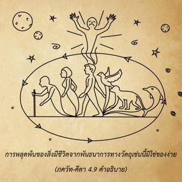
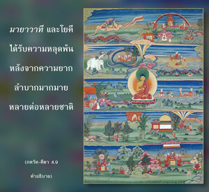

ผู้ที่รู้ธรรมชาติทิพย์แห่งการปรากฏและกิจกรรมของข้า เมื่อออกจากร่างไปแล้วจะไม่กลับมาเกิดในโลกวัตถุนี้อีก แต่บรรลุถึงอาณาจักรอมตะของข้า โอ้ อรฺชุน


การเสด็จลงมาขององค์ภควานฺจากอาณาจักรทิพย์ได้อธิบายไว้แล้วในโศลกที่หก ผู้ที่สามารถเข้าใจสัจธรรมแห่งการปรากฏของพระองค์เป็นผู้หลุดพ้นจากพันธนาการทางวัตถุ ฉะนั้นเขาจะกลับคืนสู่อาณาจักรแห่งองค์ภควานฺทันทีหลังจากออกจากร่างวัตถุปัจจุบันนี้ไป การหลุดพ้นของสิ่งมีชีวิตจากพันธนาการทางวัตถุเช่นนี้มิใช่ของง่าย มายาวาที และโยคีได้รับความหลุดพ้นหลังจากความยากลำบากมากมายหลายต่อหลายชาติ ถึงกระนั้นความหลุดพ้นที่พวกเขาได้รับคือการกลืนเข้าไปใน พฺรหฺม-โชฺยติรฺ อันไร้รูปลักษณ์ขององค์ภควานฺซึ่งเป็นเพียงส่วนหนึ่งของพระองค์เท่านั้น และยังเสี่ยงที่จะต้องกลับมาในโลกวัตถุนี้อีก แต่สาวกเพียงแต่เข้าใจธรรมชาติทิพย์แห่งพระวรกายและกิจกรรมของพระองค์ก็จะบรรลุถึงอาณาจักรแห่งองค์ภควานฺหลังจากจบสิ้นร่างกายนี้ และไม่ต้องเสี่ยงในการกลับมาโลกวัตถุนี้อีก ใน พฺรหฺม-สํหิตา (5.33) ได้กล่าวไว้ว่า องค์ภควานฺทรงมีรูปลักษณ์และอวตารมากมาย อไทฺวตมฺ อจฺยุตมฺ อนาทิมฺ อนนฺต-รูปมฺ แม้ทรงมีรูปลักษณ์ทิพย์มากมายทั้งหมดยังทรงเป็นหนึ่งเดียวกันคือ บุคลิกภาพสูงสุดแห่งพระเจ้า เราต้องเข้าใจความจริงอันนี้ด้วยความมั่นใจแม้ว่าอาจจะเข้าใจยากสำหรับนักวิชาการและนักปราชญ์ช่างสังเกตทางโลก ดังที่ได้กล่าวไว้ในคัมภีร์พระเวท ( ปุรุษ-โพธินี อุปนิษทฺ ) ว่า
เอโก เทโว นิตฺย-ลีลานุรกฺโต
ภกฺต-วฺยาปี หฺฤทฺยฺ อนฺตรฺ-อาตฺมา
“บุคลิกภาพสูงสุดแห่งพระเจ้าองค์เดียวกันนี้ทรงมีกิจกรรมในรูปลักษณ์ทิพย์มากมายในความสัมพันธ์กับสาวกผู้บริสุทธิ์ของพระองค์” คำแปลของคัมภีร์พระเวทได้ยืนยันในโศลกนี้ของ คีตา โดยองค์ภควานฺเอง ผู้ที่ยอมรับสัจธรรมนี้ภายใต้อำนาจที่เชื่อถือได้ของคัมภีร์พระเวทและบุคลิกภาพสูงสุดแห่งพระเจ้า และไม่เสียเวลาไปในการคาดคะเนทางปรัชญาจะบรรลุถึงความสมบูรณ์สูงสุดแห่งอิสรภาพ เพียงแต่ยอมรับสัจธรรมนี้ด้วยความศรัทธาเราสามารถบรรลุถึงความหลุดพ้นได้โดยไม่ต้องสงสัย คำแปลของพระ เวท ตตฺ ตฺวมฺ อสิ อันที่จริงใช้ในกรณีนี้ได้ ผู้ใดเข้าใจองค์ศฺรี กฺฤษฺณว่าสูงสุดหรือกล่าวต่อพระองค์ว่า “พระองค์ทรงเป็นองค์เดียวกับ พฺรหฺมนฺ สูงสุด บุคลิกภาพแห่งพระเจ้า” เป็นผู้หลุดพ้นโดยทันทีอย่างแน่นอน จากนั้นการเข้าสู่การคบหาสมาคมทิพย์กับพระองค์เป็นที่รับประกัน หรืออีกนัยหนึ่งสาวกขององค์ภควานฺผู้มีความศรัทธาเช่นนี้จะบรรลุความสมบูรณ์ ได้รับการยืนยันโดยคำอ้างอิงของพระเวท ดังต่อไปนี้
ตมฺ เอว วิทิตฺวาติ มฺฤตฺยุมฺ เอติ
นานฺยห์ ปนฺถา วิทฺยเต ’ยนาย
“เราสามารถบรรลุถึงระดับสมบูรณ์แห่งอิสรภาพจากการเกิดและการตาย เพียงแต่รู้ถึงองค์ภควานฺ บุคลิกภาพสูงสุดแห่งพระเจ้า และไม่มีทางอื่นในการบรรลุถึงความสมบูรณ์นี้” ( เศฺวตาศฺวตร อุปนิษทฺ 3.8) ไม่มีทางเลือกอื่นหมายความว่าผู้ใดไม่เข้าใจองค์ศฺรี กฺฤษฺณว่าทรงเป็นบุคลิกภาพสูงสุดแห่งพระเจ้า แน่นอนว่าเขาอยู่ในรระดับแห่งอวิชชาและจะไม่บรรลุถึงความหลุดพ้น จากการพยายามที่จะลิ้มรสภายนอกของขวดน้ำผึ้ง หรือจากการตีความ ภควัท-คีตา ตามหลักวิชาการทางโลก นักปราชญ์ผู้คาดคะเนเช่นนี้อาจเล่นบทที่มีความสำคัญมากในโลกวัตถุ แต่ไม่มีสิทธิ์เพื่อความหลุดพ้น นักวิชาการทางโลกผู้ผยองเช่นนี้จะต้องรอพระเมตตาจากสาวกขององค์ภควานฺ ฉะนั้นเราควรปลูกฝังกฺฤษฺณจิตสำนึกด้วยความศรัทธา และความรู้เช่นนี้จะทำให้เราบรรลุถึงความสมบูรณ์